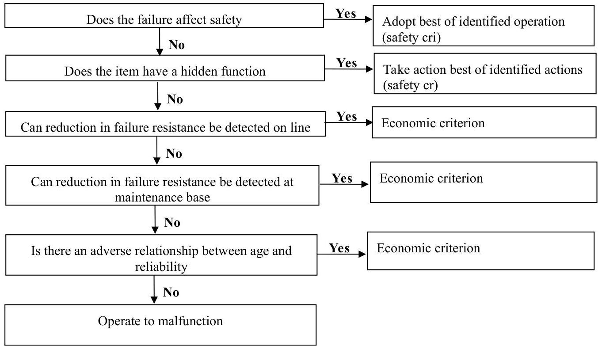

Policies & Types of Maintenance
MAINTENANCE POLICY
Maintenance policy of a productive system provides specific answer to problems concerned with:
- The selection of specific components parts of a system for maintenance.
- Decision regarding the specific forms of maintenance to be used.
- A choice between internal and external maintenance, and
- A further choice between centralized and decentralized maintenance in the case of internal maintenance.
Preventive maintenance policy is appropriate for items that wear out with time due to its use i.e., for items that show a normal failure mode. Primarily, maintenance policy must answer the questions of the extent of activities and the size of the maintenance department.
As far as the extent of activities is concerned, practices vary across companies. Small enterprises, for example, use the maintenance department for simple repair and replacement.
With regard to equipment maintenance two practices are commonly followed. One practice is to have a well planned and organized maintenance programme formulated to secure maximum life and utilization of machinery. The second practice is to adopt a policy of minimum maintenance and maximum wear. This practice is more economical in view of the fact that the equipment is usually superseded before it wears out.
Other issues which deserve consideration while framing an appropriate maintenance policy are:
- Construct out some maintenance work during peak periods to avoid excessive delays in future maintenance but avoid hiring temporary extra help.
- Defer some maintenance work until slack periods so as to utilize work force during such periods.
- Replace machine and equipment at the optimum time.
Procedure to select effective maintenance policy
-
Identification of the policies which are effective maintenance operation/action:

Figure 9.3: Self effective maintenance policy chart -
Decision regarding maintenance policies to be adopted.

Figure 9.4 below illustrates various types of maintenance. Basically, maintenance work can be planned or unplanned. Planned maintenance is maintenance work organized and carried out with foresight, control records, to a predetermined planned. Unplanned maintenance is caused due to breakdowns that has not been foreseen.

PLANNED MAINTENANCE
Planned maintenance is also known as schedule maintenance or productive maintenance. It involves the inspection of all plants/equipment, machinery to a pre-determined schedule in order to overhaul, service or repair before actual breakdown. This is to reduce the stoppage due to sudden breakdown requiring emergency maintenance.
Features of planned maintenance
- A maintenance work is well organized and planned.
- It is carried out with prior planning, foresightness controls and records.
- It is carried out in scientific way.
- It covers comprehensive planning as well as the execution part for any job concerning maintenance.
- It is generally carried out according to some pre-defined maintenance programme.
- It is applicable to any type of maintenance work such as corrective, preventive as well as replacement work.
Requirements of planned maintenance
The following factors help in deciding the planned maintenance:
- What is to be maintained i.e., the individual item of the plant and equipment to be maintained.
- The details of how each item is to be maintained i.e., method adopted.
- What maintenance resources would be needed i.e., manpower, tools, spares and test equipment etc. to carry out the maintenance work.
- The frequency of carrying out maintenance inspection.
- The method of managing the maintenance operation.
- The method of analysis, rectification and control must be pre-decided in order to evaluate the performance of maintenance system and improvements if possible.
It is the duty of maintenance department that all the above mentioned factors be defined clearly. This will form the basis and structure of a practical maintenance programme which must possess the essential details regarding the following features:
- List of all the machines/equipment, plant item which require maintenance.
- Comprehensive maintenance programme/schedule for each and every item that needs maintenance.
- A time table of maintenance events which shows when each work must be carried out.
- A technique of ensuring the maintenance work listed in the timetable.
A method of recording the results achieved and thus judging the implementation and effectiveness of the maintenance programme. Any of such programme should be easy to operate; should need minimum manpower and paper work of recording etc. it must indicate the following aspects clearly:
- What is to be maintained or what requires maintenance.
- When and where it is to be maintained.
- How is to be maintained.
- Who will do the maintenance work
- Whether the maintenance work is of desired level.
Planned maintenance is divided into two heads:
- Preventive maintenance
- Corrective maintenance
1- Preventive maintenance
Preventive maintenance attempts to prevent failures or breakdowns resulting to stoppage. It refers to maintenance action performed to keep or retain a machine/equipment in a satisfactory operating condition through:
- Regular type maintenance- greasing, oiling and cleaning.
- Periodic inspection – identification of faults, identification of degradation failure
- Replacement of worn parts before they fail.
- Machines or equipment that are liable to sudden failures should be installed in duplicate e.g., compressors, pumps, motors, transformers etc.
- Periodic overhauling of the entire machine.
Preventive maintenance is based on two themes
- Preventive is better than cure as a stitch in time saves nine. Aim to maintain equipment at its planned capacity by the most economical means.
- Preventive maintenance is based on techno economic measure, machinery selection, value analysis, cost effectiveness and defect analysis.
Features of preventive maintenance
- Proper identification of all items to be included in the maintenance programme;
- Adequate records covering volume of work, associated costs, etc.
- Inspection with a definite schedule with standing order on specific assignments.
- Use of checklists by inspectors.
- An inspection frequency schedule.
- A crew of well qualified inspectors with competency of simple repairs, as and when a small trouble is noticed.
- Administrative procedures which provides necessary fulfillment as well as follow up on programme.
Objectives of preventive maintenance
- To minimize the possibility of unanticipated production interruption or major breakdown by uncovering any condition this may lead to it.
- To make plant, equipment and machinery always available and ready for use.
- To maintain the value of the equipment and machinery by periodic inspections, repairs, overhauls, etc.
- To reduce work content of maintenance jobs.
- To maintain the optimum productive efficiency of the plant equipment/machinery.
- To maintain the operational accuracy of the plant equipment.
- To achieve maximum production at minimum repair cost.
- To ensure safety of the workmen along with plant equipment and machines etc.
- To maintain operational ability of the plant as a whole.
Procedures of preventive maintenance
A well-conceived preventive maintenance programme has the following elements, features or steps to be adhered to in general:
- Who should perform preventive maintenance?
- Where to start preventive maintenance?
- What to inspect for and regarding preventive maintenance?
- What should be the frequency of inspections?
- When to inspect or inspection schedule?
- What are the preventive maintenance stages?
- Training and motivation techniques of maintenance staff.
- Maintenance records of preventive maintenance.
- Material management for maintenance.
- Control and evaluation of preventive maintenance.
Requirements of preventive maintenance
- Proper identification of machines/equipment and tools. Every item must be uniquely identified by a prominent serial/identity number.
- Adequate past records must be available for all equipments being utilized. It should furnish complete details regarding previous maintenance operations or activities.
- Breakdown/failure data. Sufficient breakdown information regarding critically and frequency of failures must be available for all machines. This is needed for the purpose of failure identification, diagnosis, analysis and rectification.
- Secondary data. Experienced data for similar equipment/machine being utilized.
- Manufacturer's utilization recommendations. How to utilize and provide preventive maintenance.
- Service manuals, instructions and maintenance sheets.
- Consumable and replaceable parts/components. Should be available as and when needed.
- Availability of requisite skilled manpower. May be engineers, inspectors and technicians.
- Availability/provision of test equipment. i.e., test rings, sensors, etc.
- Clear instruction with a checklist regarding preventive and corrective measures. Must be available to ensure proper functioning of the system.
- User's feedback and cooperation. The user of the equipment/machine must provide feedback to the manufacturer regarding actual functioning of the system.
- Management support. For establishing a preventive maintenance system, the commitment of top managers is essential for the implementation of the policy.
Advantages of preventive maintenance
- Reduction in breakdown time and associated breakdowns elements.
- Reduces the odd time repairs and over time maintenance to the maintenance staff.
- Fewer large scale and repetitive repairs.
- Fewer members of standby equipment and spare parts required.
- Increased life of equipment and machines.
- The workload of maintenance staff can be properly planned.
- It improves the availability of the facility.
- Optimum production efficiency can be achieved.
- Maintenance and repair costs reduce heavily.
- It improves the quality of the product and reduces rejections.
- Provides a high level of plant output, and better equipment performance.
- Healthy, hygienic, safe and an accident free work environment achieved.
- Reduction in inventory of spare parts.
Limitations of preventive maintenance
- The cost of failure prevention is always greater than the cost of failure rectification hence, the process of preventive maintenance is very costly.
- This type of maintenance requires extra facilities and lead to under/poor utilization of basic facilities.
- No prior warning can be obtained from equipment.
- Premature failures normally occur.
- We do not know future life of equipment, even though we go on repairing the equipment.
Application of preventive maintenance
- Applicable for automated or continuous production process e.g., steel mills, chemical plants, etc.
- In failure of equipment such as boilers, turbines, pressure vessels and lifting devices the results may be fetal. In order to avoid any loss of life and health hazards, a proper preventive maintenance system must be adopted.
- Some common examples where preventive maintenance is adopted are: machine tools, small power plant, mobile compressors and generators.
Categories of preventive maintenance
Preventive maintenance is subdivided into the following categories:
- Running maintenance: The maintenance work is carried out even when machine or equipment is in service or in operation.
- Shutdown maintenance: The maintenance work is carried out only when the machine or equipment is not in operation. Specific maintenance work/action, carried out, when, facility is out of service. (It is combination of corrective and preventive measures).
2- Corrective maintenance
Corrective maintenance is a type of maintenance work carried out to restore the equipment/machine to a satisfactory condition after the failure has occupied. It may also be defined as a specific maintenance operation which is well organized and performed with some prior planning, forethoughts and control activity. It may be executed in the form of:
- Repair being minor or major
- Replacement being partial or total
Objectives of corrective maintenance
- To get equipment/machine back into operational as quickly as possible in order to minimize the interruption to production or use.
- To keep the cost of repair crew under control, including regular and overtime of labour costs.
- To control the investment in replacement of parts/components that are used/required when machines are repaired.
- To control the investment required for back up machines. These replace manufacturing machines are needed until the repairs are completed.
- To perform the appropriate amount of repairs at each malfunction of the asset/equipment.
- To maintain the operation availability of the plant and infrastructural facilities.
- To avoid any sudden and heavy failure (breakdown) in future.
Common causes of equipment breakdown
- Failure to replace worn-out components or parts
- Lack of lubrication
- Neglected cooling arrangements
- Indifference towards minor faults
- External factors such as wrong fuel, too low or too high line voltage, etc.
- Indifference towards equipment vibration, usually sounds coming out of the rotating parts and equipment getting too much heated up.
Characteristics of corrective maintenance
- A correction maintenance activity is generally planned.
- A planned or unplanned corrective maintenance operation depends on the nature of breakdown and the type of equipment/machine.
- The maintenance work is taken up after the occurrence of a breakdown and with some permissible time lag.
- Breakdown maintenance should not be very serious in nature as far as production losses, down time, loss of human life, etc. are concerned.
- Breakdown of individual equipment should not affect considerably the overall operation or production loss.
Advantages of corrective maintenance
- Emergency maintenance requirements are reduced.
- Heavy down time losses are reduced
- Plant availability is increased.
- Results in better utilization of plant facilities.
- Safety level is improved and hence there are less chance of accidents.
- Provides sufficient information concerning the maintenance replacement and repair.
Disadvantages of corrective maintenance
- Breakdown generally occurs at inappropriate times. It may lead to a poor hurried maintenance and excessive delays in production schedules.
- It involves prolonged down time due to nonavailability of requisite manpower and spare parts, they may lead to overtime practice.
- It becomes impossible to plan workload and distribution of maintenance workforce for balanced and proper attention of all equipment.
- It leads to faster plant deterioration.
- Reduction in production output.
- It cannot be employed for those industrial plants/enterprises which are regularly by statutory provision e.g., boilers and cranes.
- The maintenance of product quality is difficult.
- There are increase chances of accidents and less safety for workforce.
UNPLANNED MAINTENANCE
It is an operation or an activity carried out without any prior planning. It is a very urgent activity in nature. Generally, unplanned maintenance:
- Is required in case of heavy and total breakdowns which may occur without prior indication
- Is harmful to the system and they may cause loss of human life.
- Is emergent in nature in view of the fact that here, the recovery time is the most important factor in order to minimize the consequences of serious breakdowns.
Unplanned maintenance is divided into two broad categories:
a) Emergency maintenance:
Emergency maintenance is a sort of unorganized maintenance activity which should be executed only by utilizing available resources in minimum possible time. It requires disruption of scheduled activities. Heavy loss of production, heavy maintenance cost and sometimes loss of human life are the serious consequences of emergency maintenance.
b) Breakdown maintenance
A failed component of system is repaired and put back operating condition. It consists of locating the trouble in parts, opening it, putting it back in use after repair/replacement. The operation of certain equipment/system component is not functionally/economical critical. Therefore does not warrant the need for periodic inspection. Breakdown may be minor, major, complete stoppage of equipment/do not cause work stoppage, repairable/irreparable ones etc.
| Emergency maintenance | Breakdown maintenance | |
|---|---|---|
| 1 | It is always unplanned | It may be planned or unplanned |
| 2 | The nature of failure is very serious | The nature of failure is normal (not very serious) |
| 3 | No time lag is allowed | Permissible time lag may be allowed |
| 4 | Recovery time is given priority | Maintenance cost is the first priority |
| 5 | Generally occurs in pressure vessels such as boilers or turbines where the risk involved is very high | Generally occurs in general engineering work, where the delay in timely repair is not very risky. |
| 6 | Implementation is very urgent and corrective in nature with available resources. | Implementation is not very urgent but corrective in nature. |
| 7 | The delay of implementation may be serious | The effect of delay in implementation is not very serious. |
Other types of maintenance
The following types of maintenance can be planned or unplanned maintenance:
- Condition monitoring: Continuous inspection made to find out the status of a facility and to expose faults in early stage or in the beginning.
- Condition based maintenance: Corrective maintenance on the basis of condition monitoring.
- Running maintenance: Work performed on a facility while it is in used.
- Routine maintenance: Regular maintenance operations are done without thinking about economy such as replacing burnt out light bulbs, tube lights etc.
- Scheduled maintenance: Work performed based on a formal work order which identifies a known problem e.g., repair, replacement predetermined from past failure patterns.
- Continuous maintenance: Work done by increasing the periodicity of maintenance so as to prevent any kind of loss of production on account of either breakdown for inefficiency of the production system.
- Repair maintenance; When any breakdown occurs, the repair maintenance staff endeavors to locate fault and to correct it immediately.
- Design out maintenance: This technique employs the method of study approach to detect faults in equipment which call for maintenance. It aims at diagnosis of the trouble spots with a view of designing it out and thus reducing the volume of maintenance work.
PLANT MAINTENANCE METHODS
1- Damage-based plant maintenance
The damage-based method of plant maintenance (also known as the breakdown or 'runt-to-failure' method) is characterized by the fact that no preventive maintenance is carried out. System components are installed with no PM outlay, worn out, and replaced completely in the event of a malfunction. It is carried out only under the following conditions:
- If the system components involved cost considerably less to acquire than to maintain.
- If system components involved present no danger to either production or safety in the event of a breakdown, and can be repaired without significant outlay (e.g., without shutting down the system).
- If the system components involved have a limited service life that it is neither feasible nor desirable to extend (no refurbishment).
2- Time-based plant maintenance
With time-based (or periodic) plant maintenance, preventive maintenance of a system component is carried out regularly after a specific period of use. One advantage of this method is that regular preventive maintenance increases the service life of a system component. In some cases, statutory or safety regulations require proof of regular preventive maintenance (for example, fire extinguishers and automobiles are subject to inspection at regular intervals). One disadvantage of time-based maintenance is that the service life of a system component always depends on its level of usage.
3- Condition-based plant maintenance
Of the three traditional plant maintenance methods, condition-based plant maintenance is the one that enables the service life to be leveraged optimally and economically. a maintenance task is required only if a specific level of wear and tear has been reached (for example, if an only if the value for the pump has actually reached 9900 litres). To enable condition-based plant maintenance to be carried out, the actual condition of the system component must be measured precisely by means of regular inspections. For example, the pump can be fitted with a meter that measures the flow in litres and in read regularly.